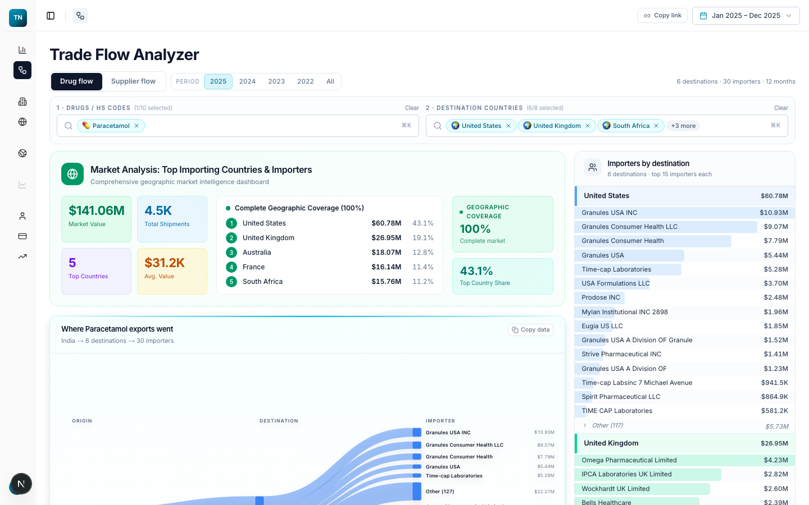

Product 01
Trade Data
Shipment-level pharmaceutical trade intelligence: who ships what, where, at what price, from India to the world, plus global bilateral flows by product and period.
Explore Trade Data →Pharma · Healthcare · Trade intelligence
Three products on one data layer: shipment-level trade intelligence, a US healthcare and pharma platform with nine decision lenses, and a natural-language query service that answers in verified numbers. Built from authorised sources, run as a read-only intelligence layer.
Three products · one data layer
Each product answers a different question. All three read the same resolved data, which is why a number in a lens, a number in the trade explorer and a number in an Ask answer are the same number.

Shipment-level pharmaceutical trade intelligence: who ships what, where, at what price, from India to the world, plus global bilateral flows by product and period.
Explore Trade Data →
US healthcare and pharma intelligence on a molecule spine: entry, supply, market access, competition, disease, facilities, regulatory and the full molecule journey, each as its own lens.
See the nine lenses →
Ask in plain English. The service finds the right tables, writes and checks the SQL, runs it read-only, and verifies every number against the rows before it answers.
How Ask verifies itself →Walkthrough
A recorded walkthrough of the US pharma and healthcare platform: the Data Atlas, the lenses, the molecule journey and the Ask console, on real data.
The mechanism
Sources arrive on different grains: a shipment, a prescription, an approval, a plant. Each is resolved to one canonical molecule key before anything is counted, and overlapping registers are taken at their maximum rather than summed. That is what stops the same prescription being counted twice.
Services
Each service is a lens plus a person who knows the data. The output is evidence with its source and vintage, never a recommendation dressed as a number.
Coverage, restrictions and the payer path for a molecule, by book and by plan.
Approvals, shortages, recalls, inspections and citations, on the molecule and on the plant.
The cliff timeline, the challengers queued and when the door actually opens.
Market share, the moat, rival supply and who is gaining paid volume.
Entry opportunities ranked by prize, opening date and sourcing risk.
Who makes it, where, with what inspection record, and how exposed the supply is.
Shipment-level buyers, suppliers and corridors for a product or a company.
Prevalence, patients, paid spend and the drugs that treat it, by state.
How it holds up
Every figure carries its source and its vintage. The platform shows signals; the decision stays with you.
Registers, records and shipment data from authorised sources, counted from the data itself, never estimated.
Nothing writes back. Every Ask answer is checked against the rows it came from before you see it.
Send one molecule or one product. We will walk you through what the platform already knows about it, on the live system.